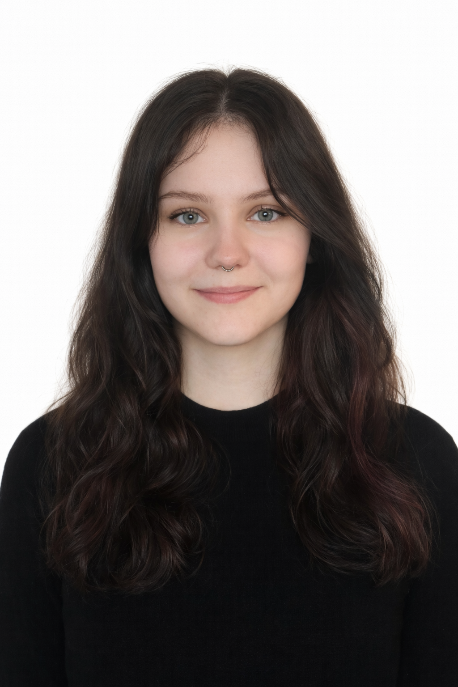

Bewerber für ein Duales Informatik Studium (B.Sc.)
E-Mail: alissarazlaw1@gmail.com
Telefon: 01514 1307466
Ich bin aktuell 18 Jahre alt und besuche das Gymnasium St.Kaspar. Ich belege die Leistungskurse Informatik und Englisch, wobei mein drittes Abiturfach Deutsch und mein viertes Religion ist. Neben der Schule arbeite ich in dem Restaurant Salento1 in Bad Driburg und betätige mich ehrenamtlich in der Grundschule St.Walburga in Neuenheerse. In meiner Freizeit gehe ich gerne Spazieren, treffe mich mit Freunden, Lese, oder lerne verschiedenste neue Sachen. Interesse an der Informatik habe ich schon sehr lange. Ich bin wissbegierig, weswegen mir Logikrätsel und knifflige Aufgaben schon immer großen Spaß gemacht haben, dies spiegelt sich auch in der Wahl meines Informatik-Leistungskurses wider. Im Unterrricht habe ich dann meine Leidenschaft für Algorithmen und die Problemlösung durch runterbrechen eines Problems in kleinere Teilprobleme entdeckt. Ich habe erkannt, dass es genau das ist, was ich später zu meinem Beruf machen möchte und womit ich Menschen helfen möchte. Das Duale Studium ist für mich die perfekte Wahl, weil ich das fundierte theoretische Wissen aus den Vorlesungen direkt in echten Praxisprojekten anwenden möchte. Da ich bisher minderjährig war und in einer ländlichen Region lebe, fehlte mir ohne Auto die nötige Mobilität, um Praktikumsplätze verlässlich zu erreichen. Mit Erreichen der Volljährigkeit und der gewonnenen Unabhängigkeit freue ich mich umso mehr darauf, bald mein erstes Praktikum in der Informatik anzutreten und nächtes Jahr im Duales Studium durchzustarten.
Durch meinen Leistungskurs Informatik bringe ich bereits sehr gute Java-Kenntnisse, sowie ein fundiertes IT-Verständnis mit. Meine Praxiserfahrung aus Nebenjobs und Ehrenamt beweist meine Belastbarkeit, Zuverlässigkeit und starke Teamfähigkeit, während mein Leistungskurs Englisch die ideale Basis für die internationale IT-Welt bildet. Ich vereine fachliches Fundament, hohe Einsatzbereitschaft und Praxisorientierung, womit ich die perfekten Vorraussetzungen habe, um ihr Unternehmen von Tag eins an tatkräftig zu unterstützen.
Gymnasium St.Kaspar, Neuenheerse | voraussichtlich Juli 2027
Leistungskurse: Englisch & Informatik